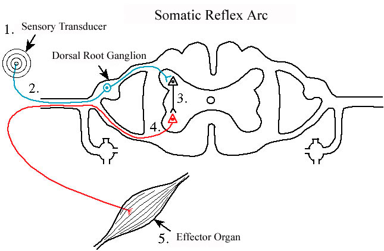

Somatische reflex

Een somatische reflex is de meest eenvoudige keten om een stimulus over te dragen teneinde een respons te verkrijgen; het eindelement in de keten is skeletspierweefsel. In de ruwe schets hierboven zijn de basiselementen van dit systeem opgenomen.
1 is een of andere sensorische transductor gelegen in de periferie, bv. een lichaampje van Vater-Pacini of een andere tastsensor in de huid.
De 2de stap is in blauw weergegeven; het is een pseudo-unipolair sensorisch neuron in de keten waarvan het perikaryon specifiek in een (cranio) spinaal ganglion is gelegen (hier weergegeven als een spinaal ganglion maar het kan evengoed een craniale zenuw zijn).
Stap 3 (zwart) toont een schakelneuron met zijn perikaryon in het CZS.
Het 4de element in de keten (rood) is een motorisch neuron waarvan het perikaryon in de ventrale hoorn van de grijze H van het ruggenmerg ligt.
Het 5de en laatste element is het effectororgaan dat bij dit type reflex altijd skeletspierweefsel zal zijn.
Het systeem werkt nu als volgt: de transductor wordt door iets geraakt, waardoor de afferente vezel van een pseudo-unipolair sensorisch neuron depolariseert en de prikkel voortgeleidt. Dit signaal wordt via een efferente vezel naar het CZS geleid, meer bepaald naar een synaps met een schakelneuron in de dorsale hoorn van de grijze H. Dat neuron zal dan op zijn beurt een prikkel sturen naar een synaps met een motorisch neuron in de ventrale hoorn. Het efferente motorische neuron, waarvan het axon zeer lang (>1m) kan zijn, verlaat het CZS en eindigt aan een motorische eindplaat op een of andere spiervezel. Bij vrijzetting van neurotransmitters (Ach) thv de motorische eindplaat zal de skeletspier contraheren.
Merk op dat dit een volledig onafhankelijk circuit is: inmenging van het CZS is niet nodig eenmaal je voorbij het “relais” van het schakelneuron bent. Laten we nu eens stellen dat je onoplettend je hand op een gloeiend hete kachel legt. Uiteraard zal je je hand onmiddellijk wegtrekken. Door dit te doen maak je gebruik van dit circuit waarbij het bewust denkproces omzeild wordt. In feite zal de gewaarwording van extreme hitte het CZS pas bereiken nadat de motorische respons om je hand weg te trekken geïnitieerd is. Met andere woorden, je trekt je hand weg zonder dat je bewust weet wat je aan het doen bent. Natuurlijk kan je dit circuit buiten spel zetten via een rechtstreekse input van het CZS. De hersenen zijn natuurlijk de baas! Als je het werkelijk zou willen, kan je je hand op de hete kachel houden en daarbij de somatische reflex negeren. Bepaalde mensen kunnen dit maar je moet dan wel behept zijn met een flinke dosis wilskracht.
1 is een of andere sensorische transductor gelegen in de periferie, bv. een lichaampje van Vater-Pacini of een andere tastsensor in de huid.
De 2de stap is in blauw weergegeven; het is een pseudo-unipolair sensorisch neuron in de keten waarvan het perikaryon specifiek in een (cranio) spinaal ganglion is gelegen (hier weergegeven als een spinaal ganglion maar het kan evengoed een craniale zenuw zijn).
Stap 3 (zwart) toont een schakelneuron met zijn perikaryon in het CZS.
Het 4de element in de keten (rood) is een motorisch neuron waarvan het perikaryon in de ventrale hoorn van de grijze H van het ruggenmerg ligt.
Het 5de en laatste element is het effectororgaan dat bij dit type reflex altijd skeletspierweefsel zal zijn.
Het systeem werkt nu als volgt: de transductor wordt door iets geraakt, waardoor de afferente vezel van een pseudo-unipolair sensorisch neuron depolariseert en de prikkel voortgeleidt. Dit signaal wordt via een efferente vezel naar het CZS geleid, meer bepaald naar een synaps met een schakelneuron in de dorsale hoorn van de grijze H. Dat neuron zal dan op zijn beurt een prikkel sturen naar een synaps met een motorisch neuron in de ventrale hoorn. Het efferente motorische neuron, waarvan het axon zeer lang (>1m) kan zijn, verlaat het CZS en eindigt aan een motorische eindplaat op een of andere spiervezel. Bij vrijzetting van neurotransmitters (Ach) thv de motorische eindplaat zal de skeletspier contraheren.
Merk op dat dit een volledig onafhankelijk circuit is: inmenging van het CZS is niet nodig eenmaal je voorbij het “relais” van het schakelneuron bent. Laten we nu eens stellen dat je onoplettend je hand op een gloeiend hete kachel legt. Uiteraard zal je je hand onmiddellijk wegtrekken. Door dit te doen maak je gebruik van dit circuit waarbij het bewust denkproces omzeild wordt. In feite zal de gewaarwording van extreme hitte het CZS pas bereiken nadat de motorische respons om je hand weg te trekken geïnitieerd is. Met andere woorden, je trekt je hand weg zonder dat je bewust weet wat je aan het doen bent. Natuurlijk kan je dit circuit buiten spel zetten via een rechtstreekse input van het CZS. De hersenen zijn natuurlijk de baas! Als je het werkelijk zou willen, kan je je hand op de hete kachel houden en daarbij de somatische reflex negeren. Bepaalde mensen kunnen dit maar je moet dan wel behept zijn met een flinke dosis wilskracht.